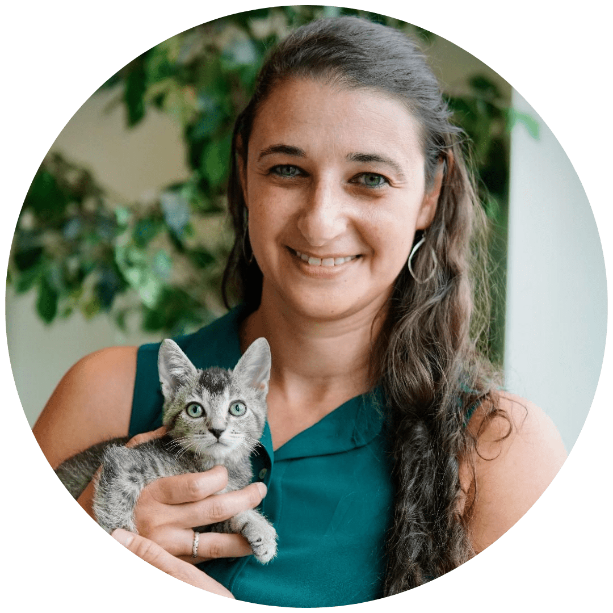
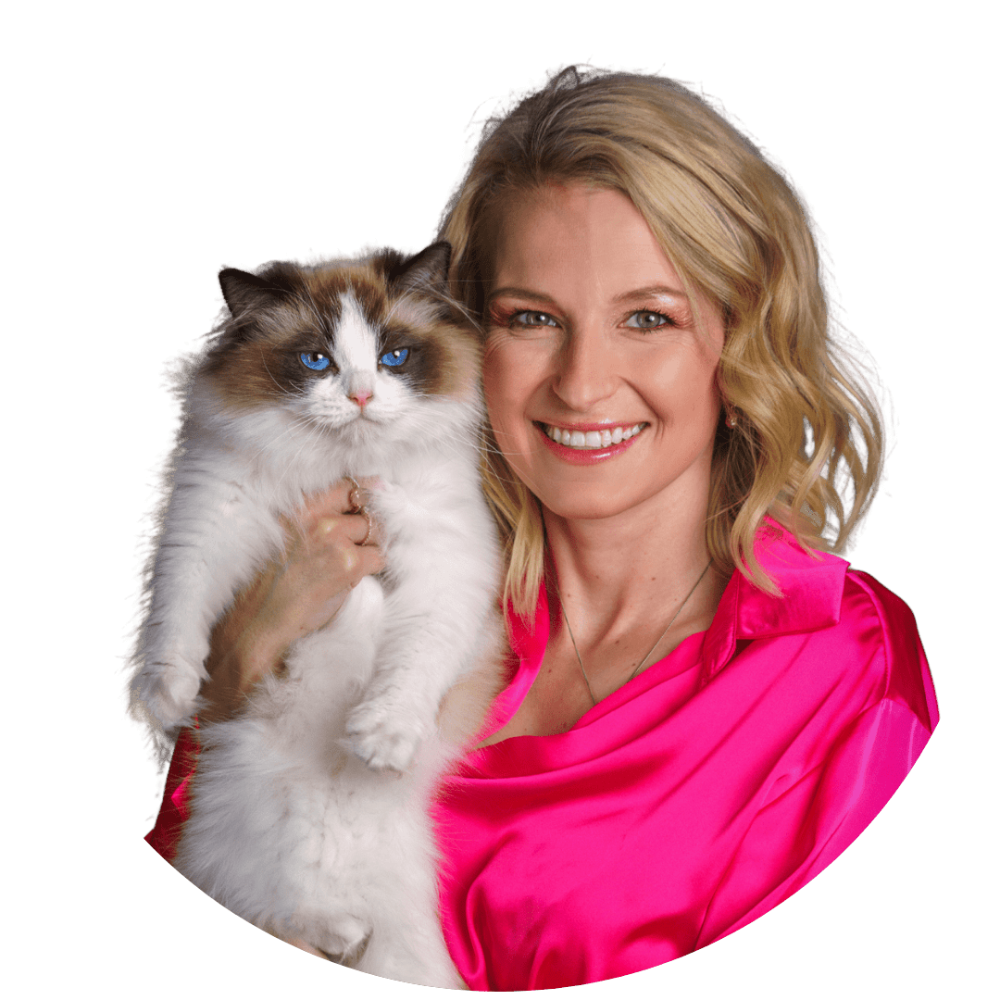
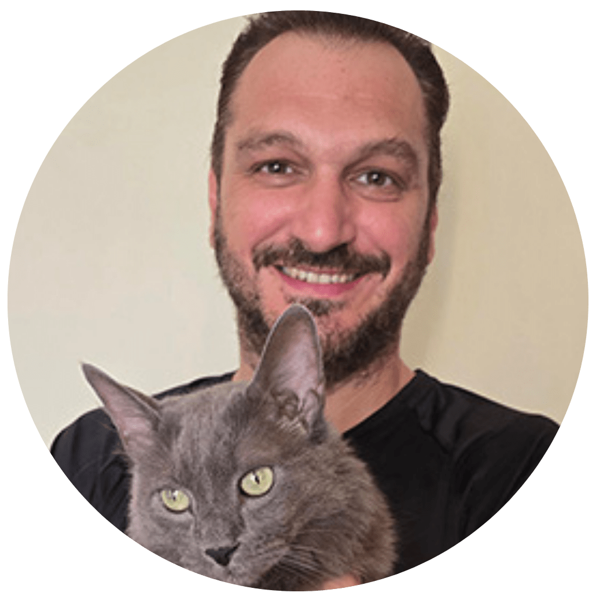
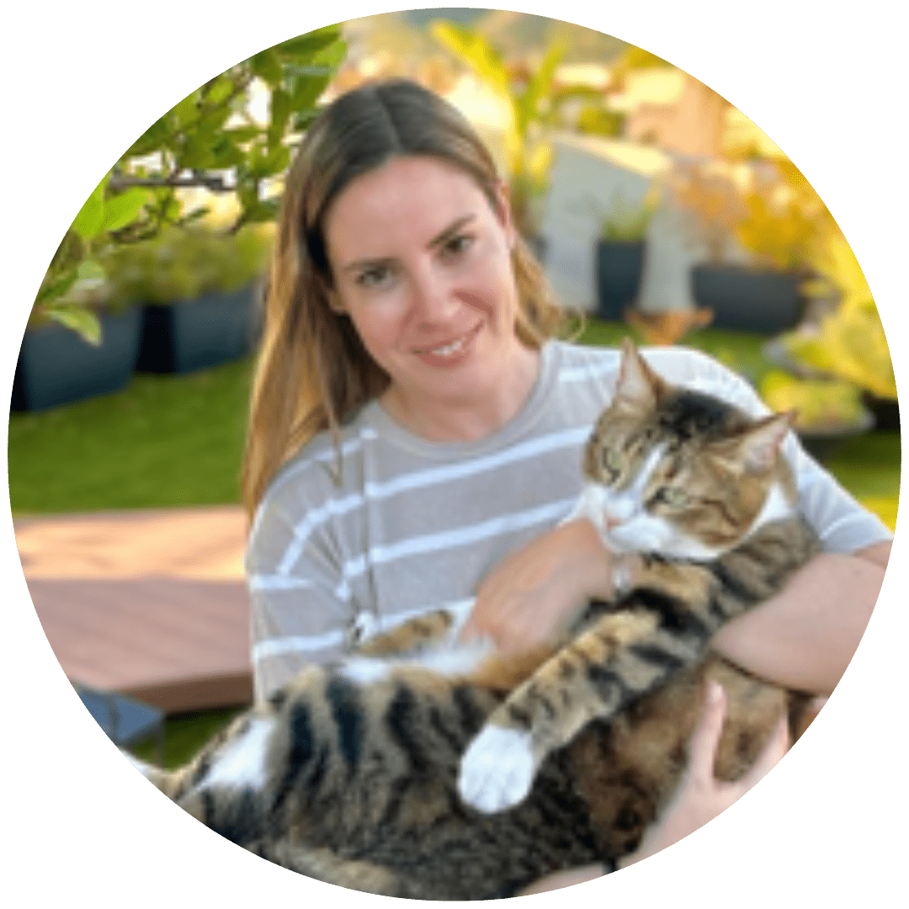
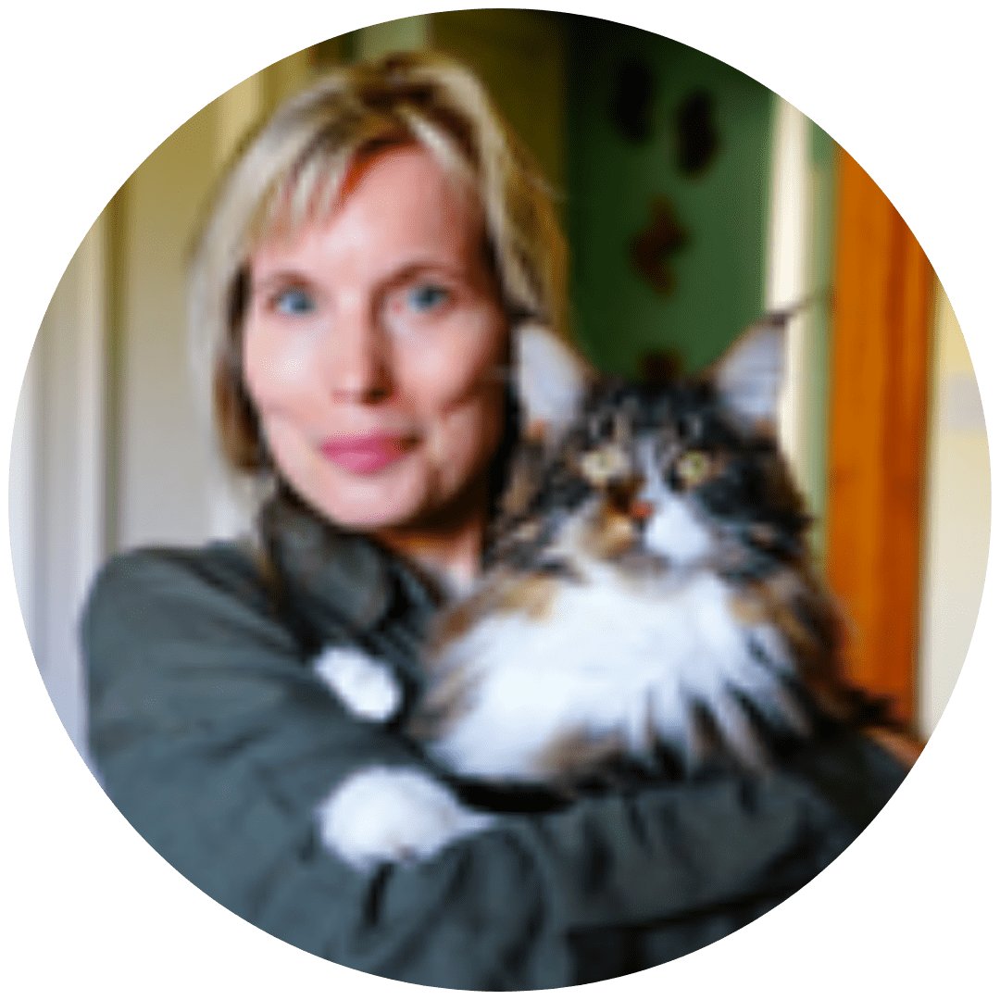
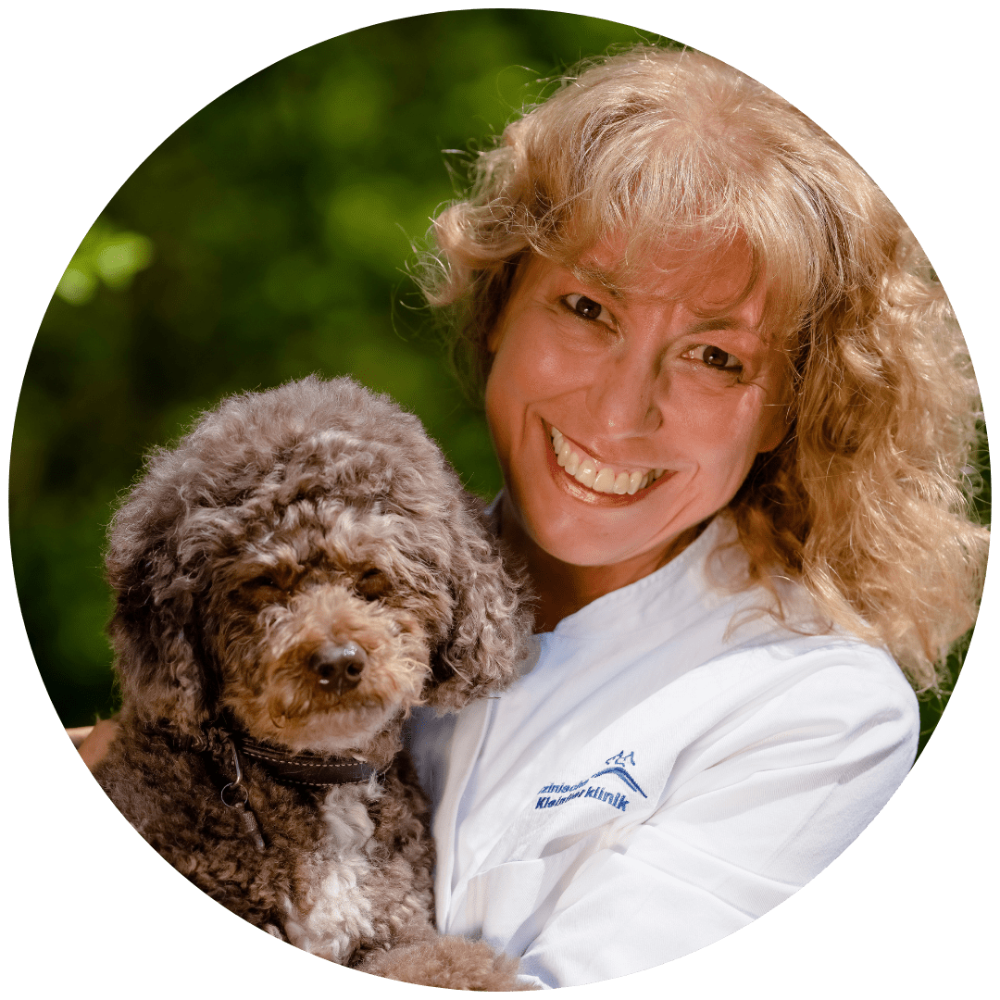
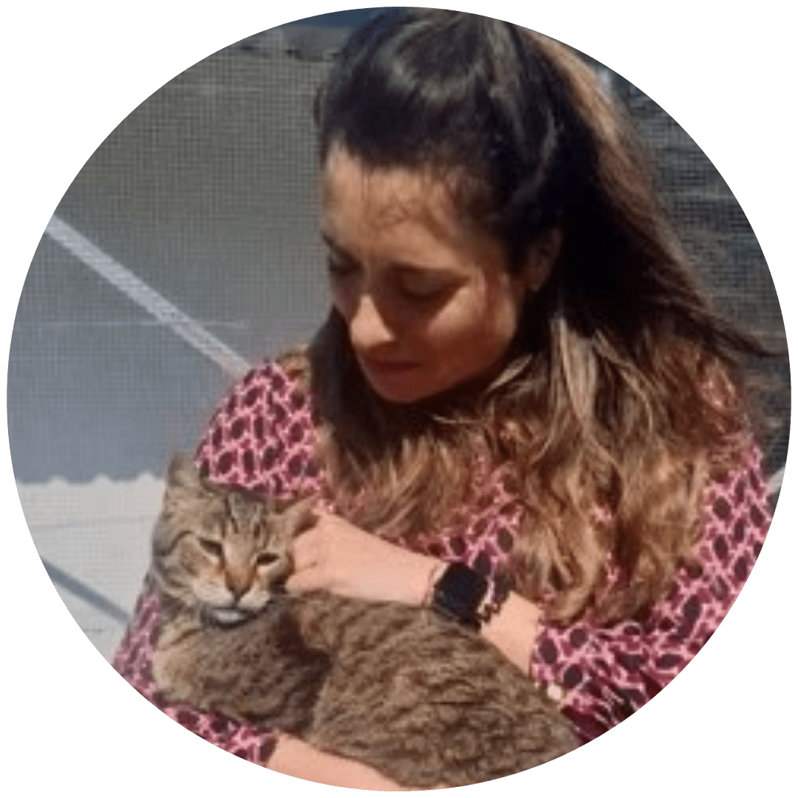
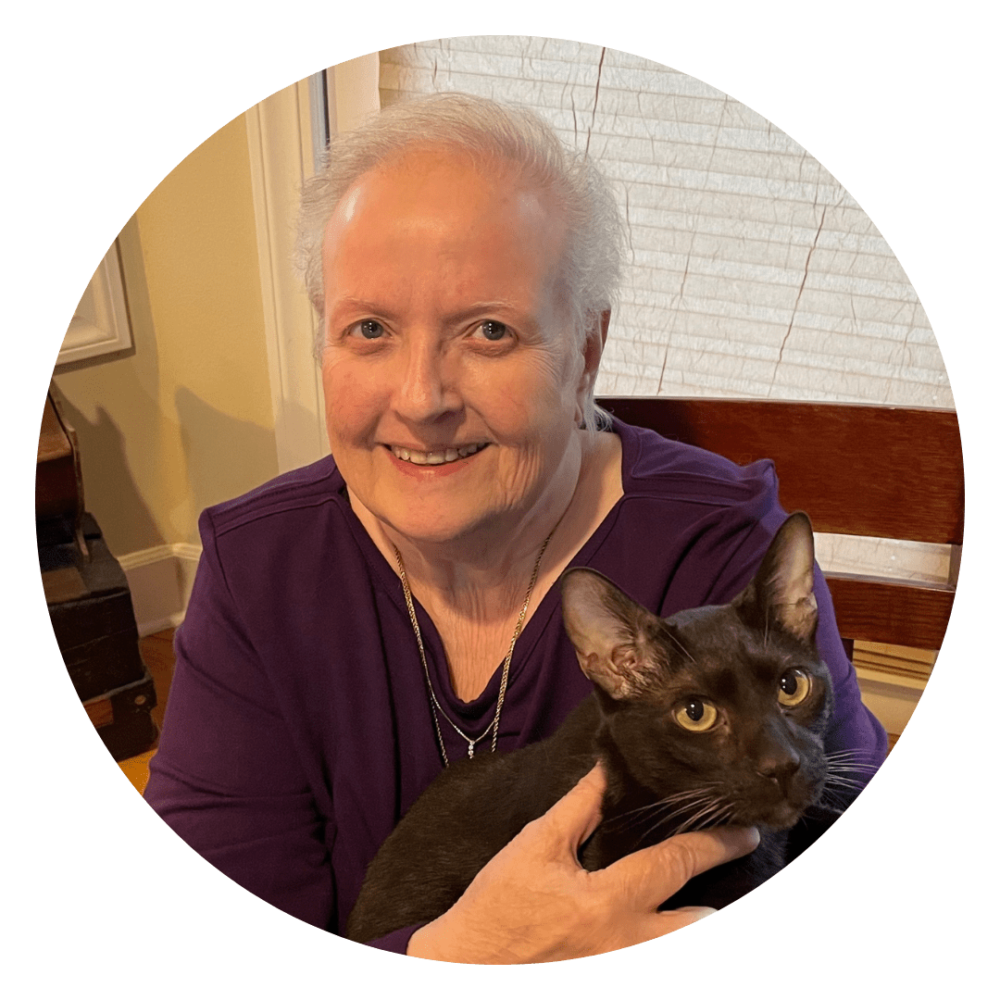
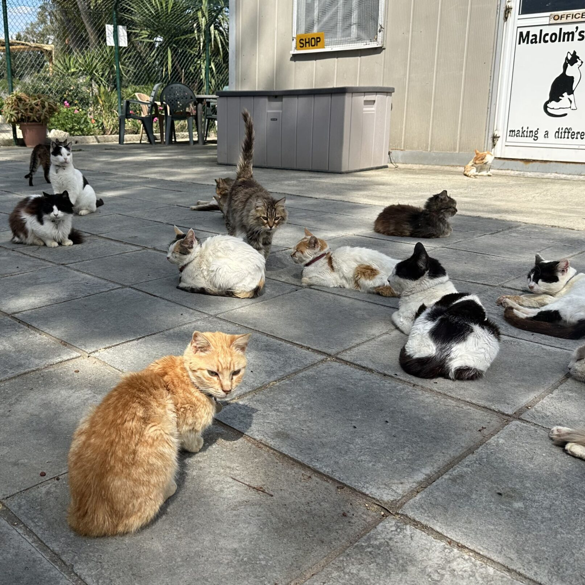

Charalampos Attipa
DVM, MRes, MVetMED, PhD, DipACVP, MRCVS
The Roslin Institute, University of Edinburgh; Vet Dia Gnosis Ltd, Limassol, Cyprus
An international coalition of veterinary scientists, epidemiologists, virologists, and clinicians united by one goal: ending the FCoV-23 FIP epidemic on Cyprus.
EveryCat Health Foundation, a non-profit organization established in 1968, advances feline health by supporting groundbreaking research and education. Its work worldwide has funded $11 million in cat health research at more than 30 partner institutions. Efforts are made possible through the generosity of dedicated donors and collaborators. Research supported by EveryCat Health Foundation helps veterinarians by providing groundbreaking research that improves diagnosis, treatment, and prevention of common feline health problems.
Morris Animal Foundation's mission is to bridge science and resources to advance the health of animals. Founded in 1948 and headquartered in Denver, the Foundation has invested more than $167 million to date in over 3,000 studies to advance the health and well-being of animals around the world. Morris Animal Foundation is the co-sponsor of the FCoV-23 IRC initiative.
Specialists from universities across the United States, United Kingdom, Europe, and Australia contributing their expertise to combat FCoV-23.








Distinguished scientists providing independent oversight and strategic scientific guidance.
FCoV-23 emerged on the island of Cyprus, spreading rapidly through the cat population. The epidemic prompted an urgent international response — bringing together veterinary scientists from four continents to understand, treat, and ultimately prevent the spread of this devastating disease.
To date, approximately 10,000 cats are known to have died. The true toll is believed to be significantly higher.
